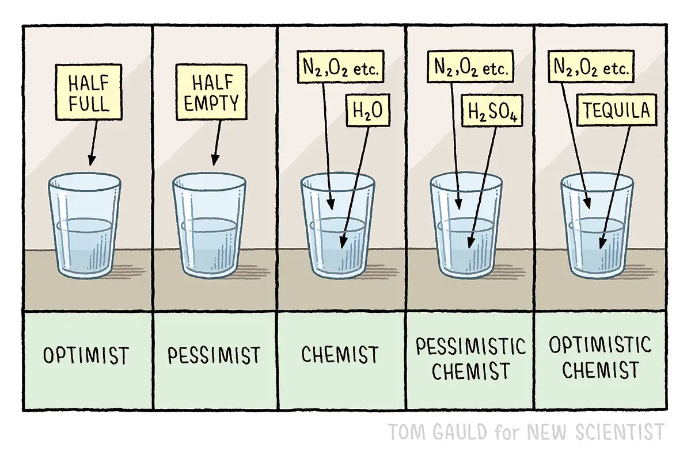

Happy Friday! Thank you for supporting the Daily Bulletin project.
- Suggest improvements to the Daily Bulletin project.
- Unsubscribe if you no longer wish to receive emails from the Daily Bulletin project.
Wellbeing Inspirations
Want to contribute to a future Daily Bulletin? Share your inspirations to give everyone some morning wellbeing energy!
Cartoon of the Day

Created by Tom Gauld.
Delicious Dinings
| Day | Meal | Options |
|---|---|---|
| Fri | Breakfast | Burrito |
| Lunch | Fish & Chips | |
| Crispy Buttermilk Quorn 🌱 | ||
| Dinner | Pepperoni Pizza | |
| Roast Pepper & Balsamic Pizza 🌱 | ||
| Sat | Breakfast | Hot Breakfast |
| Lunch | Beef Burger Bagels | |
| Creamy Mushroom & Butterbean Bagels 🌱 | ||
| Dinner | Mac & Cheese Bar 🌱 |
The catering team would like to remind everyone to wash their hands before coming to the dining hall, and to refrain from eating in the servery area. Thank you!
Retrieved from Shared Weekly Menu. For reference only; accuracy not guaranteed.
Important Events
| Day | Time | Event | Location |
|---|---|---|---|
| Fri | 16:00–18:00 | Cafe Concert | Glassroom |
| 20:30–22:00 | SOSH | Tythe Barn | |
| 20:00–22:00 | Hideout | Moondance |
Retrieved from What's On This Week.
Today in History
- 1373 – Julian of Norwich experienced religious visions, later recorded in Revelations of Divine Love, the earliest surviving English-language work attributed to a woman.
- 2025 - Cardinal Robert Francis Prevost was elected as Pope Leo XIV, making him the first pope born in the United States, the first to hold either U.S. or Peruvian citizenship, the first from the Order of Saint Augustine, and the second from the Americas after his immediate predecessor, Pope Francis.
Retrieved from Wikipedia.
Today in News
- ‘The Sheep Detectives’ is the starry, family-friendly whodunit you didn’t know you needed
- DoorDash plans to spend more than $50 million on gas price relief for its drivers this spring
- Passenger says atmosphere on board ship at centre of hantavirus outbreak is ‘relatively good’
Retrieved from the Associated Press.